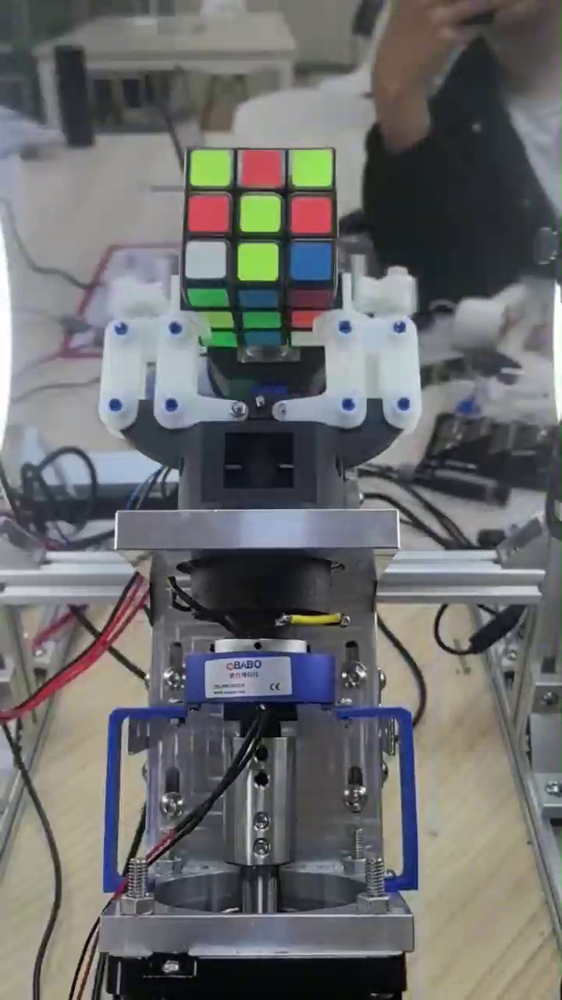
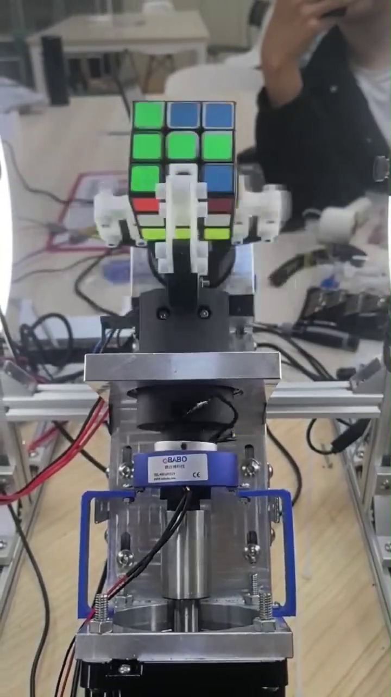

面向魔方自动复原，需要同时解决「六面视觉感知」与「双臂机械动作解算」。 上位机全链路自研：四路采集、透视校正、颜色聚类、求解调度、机械动作寻优、串口通信与整机联调。
一手持魔方、一手拧。视觉识别到机械执行全流程自主完成。


OpenCV 同时打开四路 USB 摄像头会失败，所以采集层换成了 DirectShow。
Kociemba 只给「拧法序列」，不给「怎么用两只手拧」。这一层是项目里实现最重的部分。
同一串 U R' F2 ...，双臂机器人有多种执行方式：哪只手持、哪只手拧、要不要先倒腾到另一面。
代码把它做成三层搜索：
机械约束是推导出来的，不是试出来的：L/R 面用右臂拧、F/B 面用左臂拧、U/D 需先倒腾到 F/R 面； 不同持握姿态下同一动作步数不同，例如「左手拧只须 4 步，右手拧 8 步，所以弃右手拧」。
实时性靠下位机保证，而不是靠上位机按时发包。
自定义帧格式：帧头 + 长度 + 指令 + 数据 + 校验和，波特率 115200。
90° 与 180° 各 32 组曲线写入 W25Q32 Flash，下位机按曲线独立执行，避免上位机抖动影响动作。
开爪、合爪、带转、空转的单步耗时全部实测标定，作为寻优的时间参数。
内置调试面板支持单轴点动、脉冲标定、曲线对拍，换电机或结构调整后可重新标定。
本项目源码涉及比赛作品的完整实现，按团队约定不对外开源。本页展示的是系统设计与成果， 技术细节可在面试中就设计取舍、算法选型与工程实现展开。